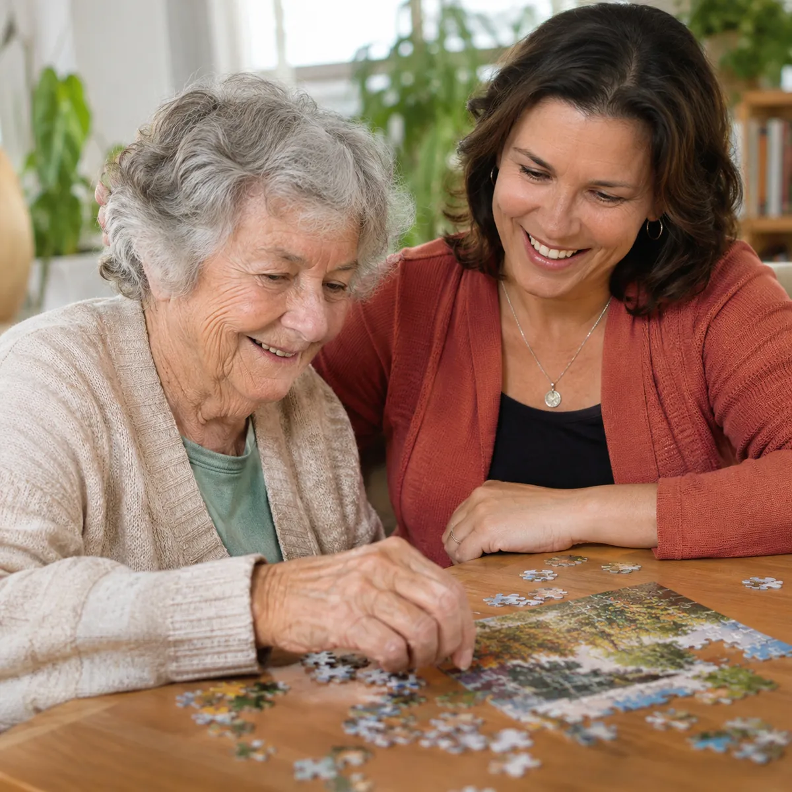

Adulto mayor
Que los días en casa sigan siendo suyos
Acompaño a la persona mayor en su casa y en su día a día, respetando sus tiempos, sus gustos y su historia. La familia sabe cómo está y qué necesita.
- Compañía y escucha en lo cotidiano
- Actividades que estimulan: juegos, lectura, música y plantas
- Salidas, paseos y acompañamiento a turnos médicos
- Cuidados del día a día, con un registro para la familia